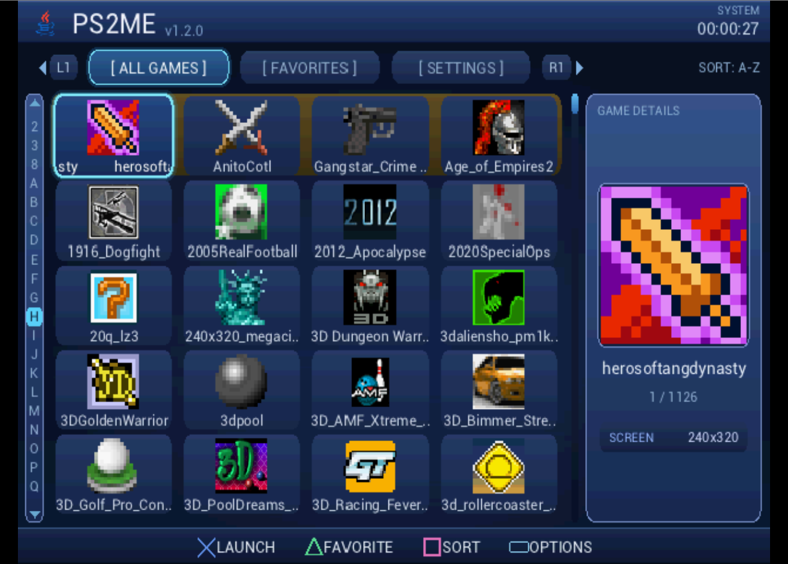
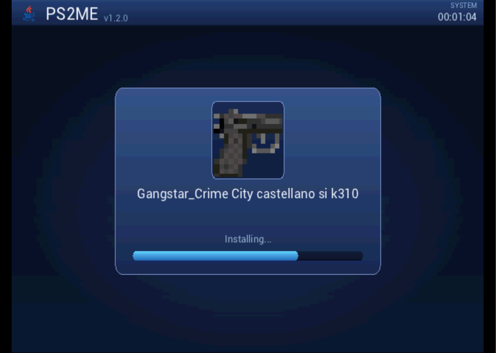
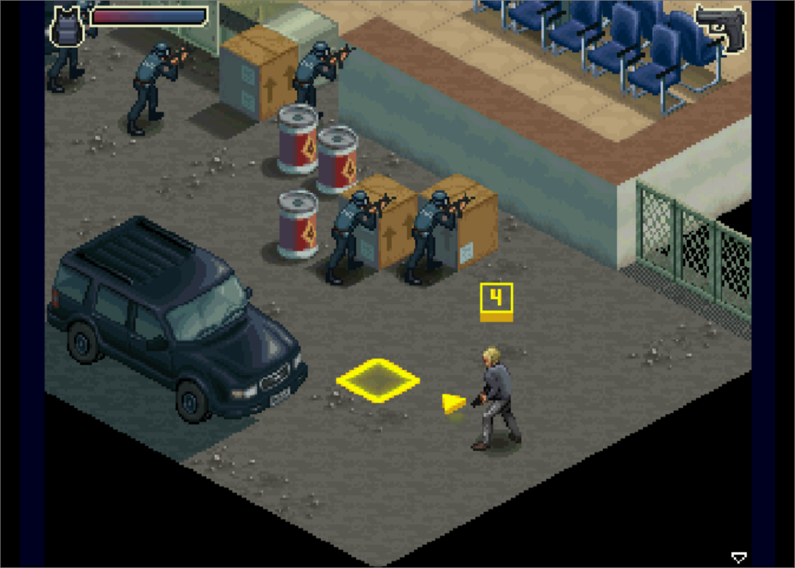
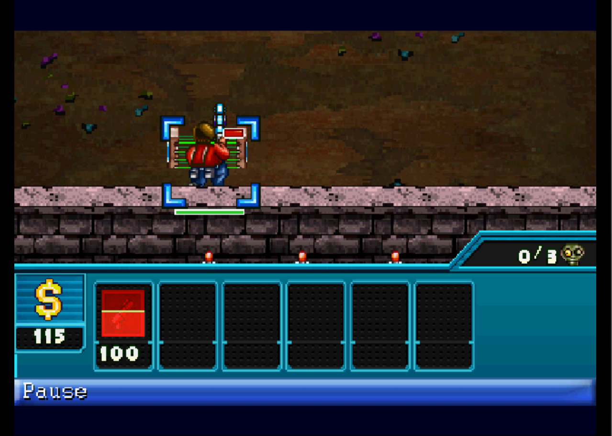
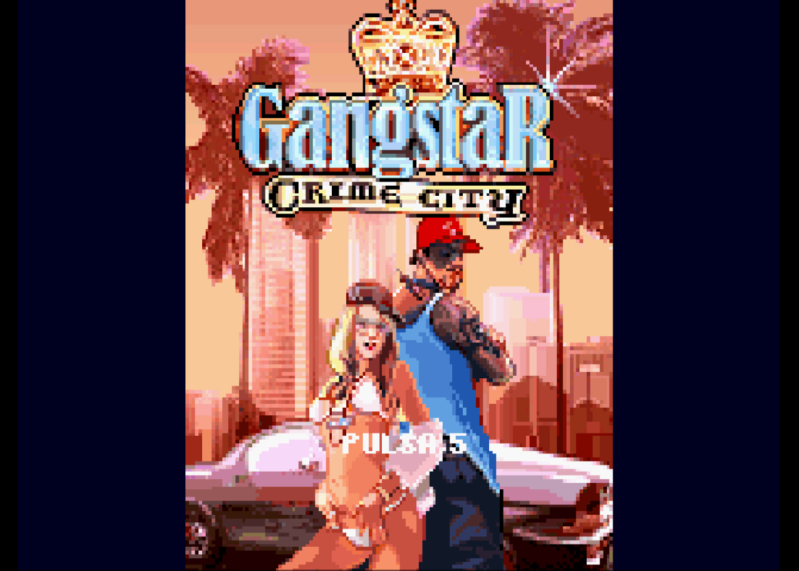
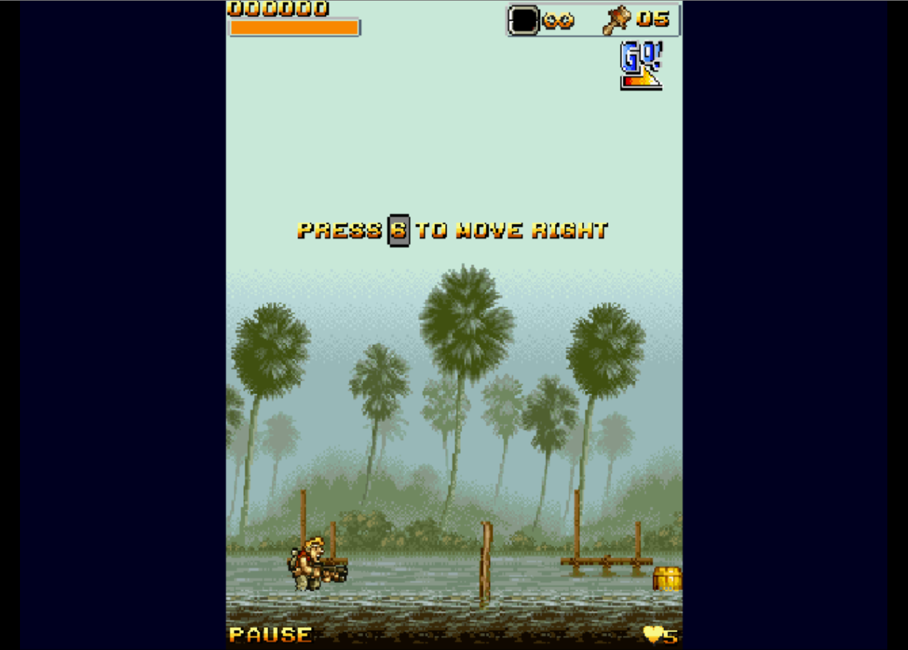
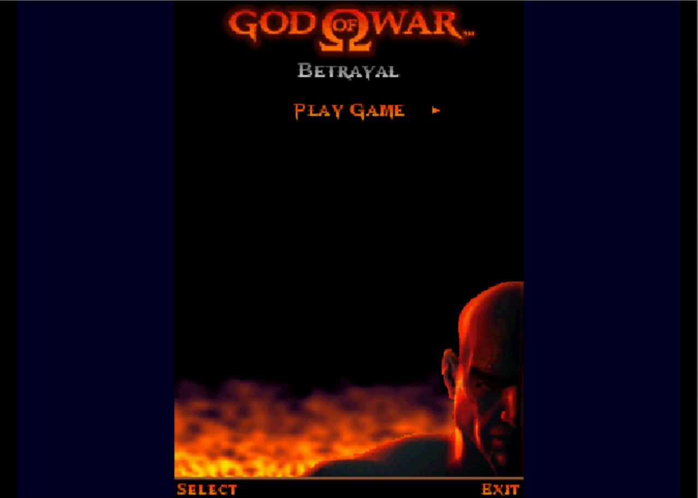
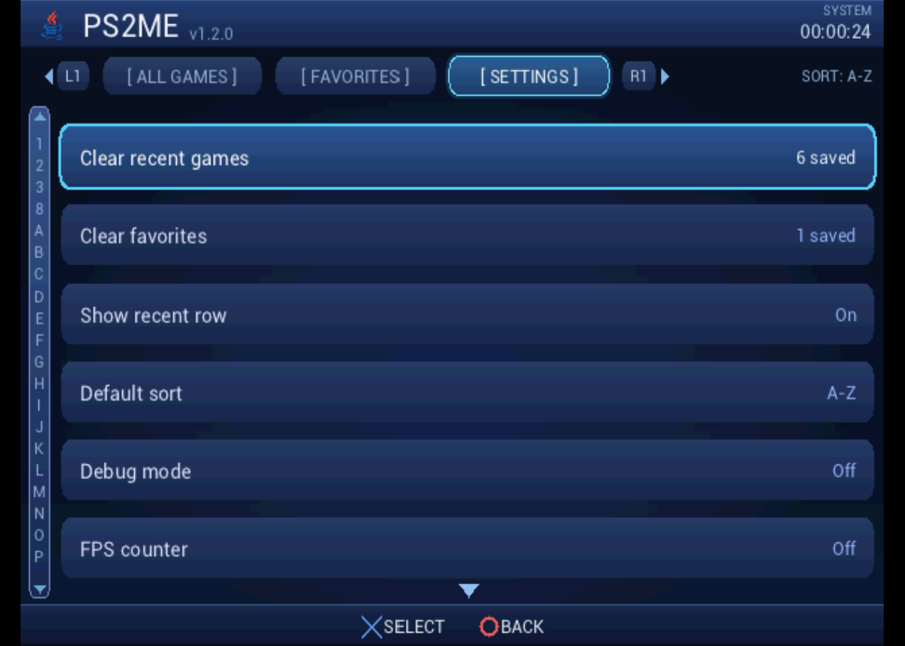
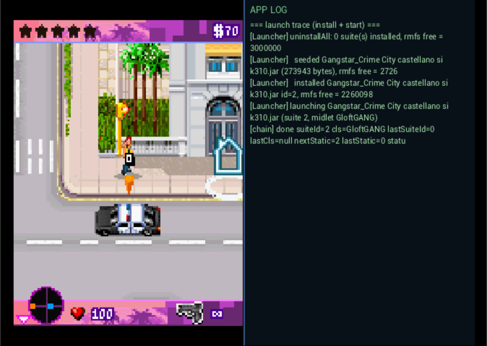

Features
Native launcher
A full-screen 640×448 dashboard with a 4×5 grid of game icons decoded straight from each JAR, tabs, an alphabet sidebar, sorting, favorites, and recents.
Landscape, portrait & multi-screen
Per-game orientation and resolution overrides, with 11 screen-size presets, so portrait, landscape, and multi-screen MIDlets built for any phone all display correctly with their aspect ratio preserved.
Audio
Menu music on a hardware SPU2 voice, the Nokia Sound API, and MMAPI MIDI through an offline-built wavetable synth.
Memory-card saves
MIDlet RecordStore data is saved per game and appears in the console's OSD browser with its own icon and title.
Quality of life
A friendly loading screen, a debug split view, and an opt-in in-game FPS counter.
Open source
Built on phoneME Feature and the PS2 SDK, released under the GPL‑2.0 license.
Screenshots









Screenshots captured in the PCSX2 emulator.
Releases
Loading releases from GitHub…
Debug mode
Flip Debug mode on in Settings to turn the launcher into a diagnostics tool — handy on real hardware, where the EE console is not visible:
- Split view while a game runs — the game is scaled on the left and the
full application log (install trace,
System.out, errors) streams on the right. - Storage diagnostics — when no games are found, the empty screen lists the device probes and resolved paths, so you can see exactly where PS2ME looked.
- FPS counter — an opt-in overlay to check a game’s frame rate.
All of these are off by default, so the everyday experience stays clean.
Getting started
- Download
PS2ME-vX.Y.Z.elf(and the optionalbgm.adpcm) from the Releases page. - On a FAT32 USB drive, create this layout:
mass:/PS2ME/PS2ME-vX.Y.Z.elf mass:/PS2ME/bgm.adpcm (optional menu music) mass:/PS2ME/games/*.jar (your MIDlets) - Launch the ELF from a homebrew loader (uLaunchELF / wLaunchELF), or open it in PCSX2.
- Pick a game and press ✕.
Launcher controls: D-pad move · ✕ launch · ○ back · △ favorite · □ sort · L1/R1 tabs · L2/R2 page · Select options.
Build from source
The build runs entirely in Docker (a JDK-8 host image that romizes the class library, plus a PS2 EE cross image that links the ELF). The phoneME source tree and PS2 SDK are external and are not vendored, so builds are produced locally.
docker run --rm -v "$(pwd)":/work -v phoneme_build:/build \
phoneme-cross bash /work/docker/phoneme-cross/build-release-ps2.shSee the README for details.